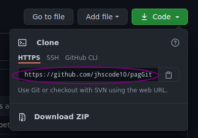
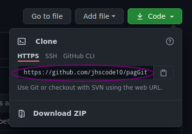

Get started with Git and GitHub
Learn
Work
Share
and more!
Git
It is the best way for developers can keep control of the version of their project. You will be able to branch your project. return any previous version of your code and use any plain text or programming language. It is ideal for working with companies and collaborating on projects open source since you can link your local repository with a remote one.
What is Git?
Git is a distributed version-control system for tracking changes in source code during software development. It is designed for coordinating work among programmers, but it can be used to track changes in any set of files. Its goals include speed, data integrity, and support for distributed, non-linear workflowsclarification needed. Git was created by Linus Torvalds in 2005 for development the Linux kernel, with other kernel developers contributing to its beginning. Since 2005, Junio Hamano has been the core maintainer. As with most other distributed version-control systems, and unlike most client–server systems, every Git directory on every computer is a full-fledged repository with complete history and full version-tracking abilities, independent of network access or a central server. Git is free and open-source software distributed under GNU General Public.
Git is a type of version control system used to maintain code. To gain a good understanding of why Git is useful, we must first understand the purpose of a version control system. In technology, version control systems are software tools used to track changes to code over time. Version control systems (VCS) store a list of all the changes made to code in a database, alongside who made those changes and a description of the changes made. In almost every project—large and small—version control plays a role. For teams, having a strong VCS set up is specially important. This is the case for a number of reasons. First, version control systems allow the team to keep track of changes over time, so if something goes wrong they will have a record of the changes and events which lead up to the problem the team is encountering. Second, VCS allow a team to store different versions of their project. So, as soon as a new release is ready, it can be stored in a version control platform alongside a name, a description of the release, and any other relevant metadata (such as the name of the author, and so on). Even individual developers can make use of version control systems. This is because version control’s primary function is to track code, and even if you are working alone, you will likely still want to keep a record of your code and how it has evolved.
Git installation
- Step 1: Next to dowload Git Browse to the download location (or use the download shortcut in your browser). Double-click the file to extract and launch the installer.
- Step 2: Now allow the app to make changes to your device by clicking Yes on the User Account Control dialog that opens.
- Step 3: Review the GNU General Public License, and when you’re ready to install, click Next.
- Step 4: The installer will ask you for an installation location. Leave the default, unless you have reason to change it, and click Next.
- Step 5: A component selection screen will appear. Leave the defaults unless you have a specific need to change them and click Next.
- Step 6: The installer will offer to create a start menu folder. Simply click Next.
- Step 7: Select a text editor you’d like to use with Git. Use the drop-down menu to select Notepad++ (or whichever text editor you prefer) and click Next.
- Step 8: This installation step allows you to change the PATH environment. The PATH is the default set of directories included when you run a command from the command line. Leave this on the middle selection and click Next.
- Step 9: The next option relates to server certificates. Most users should use the default. If you’re working in an Active Directory environment, you may need to switch to Windows Store certificates. Click Next.
- Step 10: The next selection converts line endings. It is recommended that you leave the default selection. This relates to the way data is formatted and changing this option may cause problems. Click Next
- Step 11: Choose the terminal emulator you want to use. The default MinTTY is recommended, for its features. Click Next.
- Step 12:The default options are recommended, however this step allows you to decide which extra option you would like to enable. If you use symbolic links, which are like shortcuts for the command line, tick the box. Click Next.
- Step 13: Depending on the version of Git you’re installing, it may offer to install experimental features. At the time this article was written, the option to include interactive options was offered. Unless you are feeling adventurous, leave them unchecked and click Install.
- Step 14: Once the installation is complete, tick the boxes to view the Release Notes or Launch Git Bash, then click Finish.
If you want to install git on Windows. You will need to go to a browser and download the git software on the Git oficial page and follow the next steps.
- Step 1: Open Safari and browse to the Git developer site.
- Step 2: Click on Mac OS X below Downloads.
- Step 3: Open the git-2.8.1-intel-universal-mavericks file in your Downloads folder.
- Step 4: Double click the git-2.8.1-intel-universal-mavericks.pkg file.
- Step 5: If you get a warning that says "“git-2.8.1-intel-universal-mavericks.pkg” can’t be opened because it is from an unidentified developer." Open Settings > Security & Privacy > General and click Open Anyway.
- Step 6: Click Continue, Install and enter your admin password.
- Step 7: Click Close.
iOS usually have Git for default in your MAC open Terminal and enter the command (git --version). If you see git version followed by numbers, i.e., git 2.5.4 then you are good to go. If you don't have Git installed follow the next steps.
Now open Terminal and enter git --version. You will see "git version 2.8.1".
- If you’re on Fedora or other closely related RPM-based distribution, like RHEL or CentOS, you can use dnf:$ sudo dnf install git-all
- If you happen to be on a Debian-based distribution, like Ubuntu, try using apt:$ sudo apt install git-all
- Gentoo:# emerge –ask –verbose dev-vcs/git
- Arch Linux:# pacman -S git
- openSUSE:# zypper install git
- Mageia:# urpmi git
- Nix/NixOS:# nix-env -i git
- FreeBSD:# pkg install git
- OpenBSD:# pkg_add git
- Alpine:$ apk add git
- Slitaz:$ tazpkg get-install git
If you will install Git on Linux via a binary installer through the package management tool that comes with your distribution.
Installation For Other Unix Distributions

GitHub
It is known as the social network of programmers. GitHub brings teams together to work through problems, move ideas forward, and learn from each other along the way.


What is Gitub?
It's a (collaborative development platform) to host projects using the Git version control sistem. it is mainly used for creating source code for computer programs. The software that runs GitHub was written in Ruby on Rails. ince junuary 2010, has operated under de name GitHub,inc.it was previously known as logical Awesome LLC. The code for projects hosted on GitHub is typically stored publicly. On June 4, 2018 Microsoft bought GitHub for the amount of 7500 millions dollars, at the beginning the change of owner generated conserns and exit of some projects from this repository, howevwe they were not representative. GitHub continues to be the most important collaboration platform for Open Source projects.
Why use GitHub?
A good GitHub profile can impress the interviwer. for thar reason Millions of developers use GitHub to share code and build businesses. In 2017, the Github community reached 24 million developers working across 67 million repositories.
GitHub isn't just for Developers
All this talk about how GitHub is ideal for programers may have you believing that they are the only ones who will find it useful. Although it's a lot less common, you can actually use GitHub for any type of files. If you have a team that is constantly making changes to a word document for example, you could use GitHub as you version contol system.this practice isn't common, since there are better alternatives in most cases, but it's sometimes to keep in mind.
Start your local Reposity of your project

Repository
A repository (usually abbreviated to "repo") is a storage location for software packages. Often a table of contents is stored, as well as metadata. Repositories group packages so is a location where all the files for a particular project are stored. Each projects has its own repo, and you can access it with a unique URL.
Remember that Git is optimized for teamwork, therefore, we must give you a little information about us. We should not do it every time we execute a command, it is enough to execute the following commands only once with your information: $ git config --global user.email "your@email.com" $ git config --global user.name "Your Name" There are many other Git configurations that you can find by running the git config --list command (or just git config for a more detailed explanation).
Basic work cycle in Git:
To start a repository, that is, activate the Git version control system in your project, you just have to run the command. $ git init This command will do two things: first, create a .git folder, where the entire database with atomic changes from our project will be saved; and second, create an area that we know as Staging, which will temporarily save our files (when we execute a special command for that) and will allow us, later, to save these changes in the repository (also with a special command).
Commands to move files between Git states:
$ git status Allows us to see the status of all our files and folders.
$ git add file-folder-mane Helps us move files from untraked or unstaged to staged state. We can use git file-or-folder-name to add individual files and or folders or git add -A to move all files in our project (both Untrackeds and Unstageds).
$ git reset HEAD Helps us take files out of the staged state to return them to their previous state. If the file came from unstaged, the go back there. and the same was comming from untracked.
$ git reset --hard This command allows us to delete all the information we have in the staging area (this removes everything to form permanently).
$ git reset --soft This command is friendlier. because it does not absolutely remove the information from the hard disk, only from the staging area and lets us add our changes but from a previous commit.
$ git commit -m "change name" Helps us move files from Unstaged to traked. this is a special occation, the files have been saved or updated in the repository. Git will ask us to leave a menssage to remember the changes we made and we can use the -m argument to write it.
$ git rm This command deeds one of the following arguments to be successful:
- $ git rm --cached Move the files that we indicate to the Untraked state.
- $ git rm --force Delete the files from Git and from te hard disk. Git keeps the record of the existence of the files, so we can recover them if necessary (but we must use more advanced commands).
files status in Git:
When we work with Git our files can live and move between 4 different states (when we work with remote repositories it can be more states):
- Tracked files: These are the files that live inside Git, have no pending changes and their latest updates have been saved in the repository thanks to the git add and git commit commands.
- Staged files: These are files in Staging. They live inside Git and there is a record of them because they have been affected by the git add command, although not its latest changes. Git already knows about the existence of these latest changes, but they have not yet been definitively saved in the repository because the git commit command has yet to be executed.
- Unstaged files: Understand them as “Tracked but Unstaged” files. They are files that live inside Git but have not been affected by the git add command, much less by git commit. Git has a record of these files, but it is out of date, its latest versions are only stored on the hard drive.
- Untracked files: These are files that DO NOT live inside Git, only on the hard drive. They have never been affected by git add, so Git has no records of their existence. Remember that there is a very rare case where files have two states at the same time: staged and untracked. This happens when you save the changes to a file in the Staging area (with the git add command), but before committing to save the changes in the repository you make new changes that have not yet been saved in the Staging area (in Actually, everything still works the same but it's a bit fun).
Branches, Merge, and how show commits and compare changes:
$ git branch branch-nameWhen you start a repository, By defalul you are located in the master branch. This command creates a new branch where you will have a copy of your project and there you can make changes, correct bugs and do experiments, it does not affect your main branch. and if you want to add your changes to the main branch you can do a git merge. $ git checkout branch-nameThis command is to jump between branches, when you are located in a branch you can see only its state and not that of other branches, to see the changes of another branch and be able to modify it we use the git checkout. $ git checkout commit-IDThis command let us return in the time. we coan return to wharevwe last vertion of our project, this command is to a form to make news branches and jump betwen thre. $ git merge branch-nameWhit this command you will can add the changes in a branch in another branch and this make a fussion whit the content to the 2 branches for example add the changes in your master branch. $ git show commitThe git show command shows us the changes that have existed on a file and is very useful to detect when certain changes occurred, what was broken and how we can solve it. But we can be more detailed. $ git diff [commit A] [commit B]If we want to see the difference between one version and another, not necessarily all the changes since the creation of the file, we can use the git diff command. $ git logIf we want watch all your commits we could use the git log command and you can get the ID of your commits with this command. $ git swichThis command let us change to branches.
What is a branch and how does a Merge work in Git?
Git is a very accurate database with all the changes and growth that our project has had. Commits are the only way to keep track of changes. But branches amplify Git's potential much more. All commits are applied on a branch. By default, we always start at the master branch (but you can rename it if you don't like it) and create new branches from there to create independent workflows. Creating a new branch is about copying a commit (from any branch), passing it elsewhere (to another branch) and continuing the work of a specific part of our project without affecting the main workflow (which continues in the master branch or the main branch). Development teams have a standard: Everything in the master branch goes to production, new features, characteristics and experiments go in a "development" branch (to join master when they are finally ready) and issues or errors are they fix on a "hotfix" branch to join master as soon as possible. Creating a new branch is known as Checkout. Joining two branches is known as Merge. We can create all the branches and commits we want. In fact, we can take advantage of the Git changelog to create branches, bring in old versions of the code, fix them, and combine them again to improve the project. Just keep in mind that combining these branches (yes, “merging”) can create conflicts. Some files may be different in both branches. Git is very smart and can try to join these changes automatically, but it doesn't always work. In some cases, we are the ones who must resolve these conflicts "by hand"
Synchronizing changes betwen the local repository with the remote and cloning repositories:
$ git clone Repository-URLthis command allows us to clone a remote project and download it to our files. $ git fetch $ git pull [locale-branch] [remote-branch] this command brings the changes from the remote repository to our local repository. $ git push [locale-branch] [remote-branch]this command loads the current commit to the remote branch.

Make your remote repository and synchronizing with the local
Make your remote repository and synchronizing with the local
To synchronize your remote repository with your local one and be able to push your project, you only need to create a new repository in your GitHub account with the name of your project, then you will click on where the file icon is and copy the repository URL . next in your terminal you will write the following command.
 
$ git remote add main Repository-URL
You will verify that a remote source exists with the command.
$ git remote -v So there you cn see te name of you remote repository.
Now you will can do push to thr remote repository, but a more secure way to work with the proyects is te keys SSH. You can synchronize your proyect with this command.
$ ssh-keygen -t rsa -b 4096 -C "yourmail@"

$ git remote add main Repository-URL
You will verify that a remote source exists with the command.
$ git remote -v So there you cn see te name of you remote repository.
Now you will can do push to thr remote repository, but a more secure way to work with the proyects is te keys SSH. You can synchronize your proyect with this command.
$ ssh-keygen -t rsa -b 4096 -C "yourmail@"